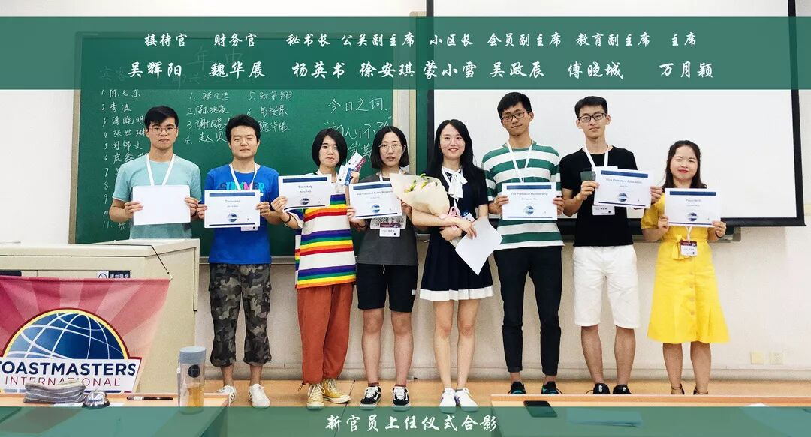

Beihang Toastmasters Club is run by a group of officers. Please feel comfortable to contact us whenever you have any question.
北航Toastmasters俱乐部由一支官员队伍运营。如果有相关问题，请随时与我们联系。
访客对俱乐部有任何问题请先联系会员副主席。
Guests please contact Vice President Membership firstly.
现任官员
Incumbents
主席President
Cynthia Wan（万月颖）
负责统筹俱乐部重大事项
in charge of major club decisions
Wechat：huihui19951011
教育副主席
Vice President Education
Jack Fu（傅晓城）
负责俱乐部会议日常运行以及质量控制
in charge of meeting operation and quality control
微信Wechat: Fxc13691883313
会员副主席
Vice President Membership
Chen Wu（吴政辰）
负责吸收新会员以及会员管理
in charge of member recruitment and management
微信wechat: william157400
公关副主席
Vice President Public Relations
Amber Xu（徐安琪）
负责俱乐部会议宣传及推广事务
in charge of public relations and promotion
微信Wechat: xuanqi1997
秘书长Secretary
Kerry Yang（杨英书）
负责俱乐部会议记录
in charge of meeting records
微信Wechat: yang13780685941
财政官Treasurer
Jackie Wei（魏华展）
负责俱乐部财务收支
in charge of financial balance
微信Wechat:asdfgjackie
接待官SAA
Yang Wu（吴辉阳）
负责俱乐部来访客人接待以及登记
in charge of security and guest registration
微信Wechat: MM741521
在这里，我们一起成长，一起学习演讲，学习英语，提高领导能力，结识一群志同道合来自五湖四海的朋友，收获颇丰。
也许，我们不是最会说但一定是最敢说
我们会怀着感恩的心
陪着头马 慢慢变老
